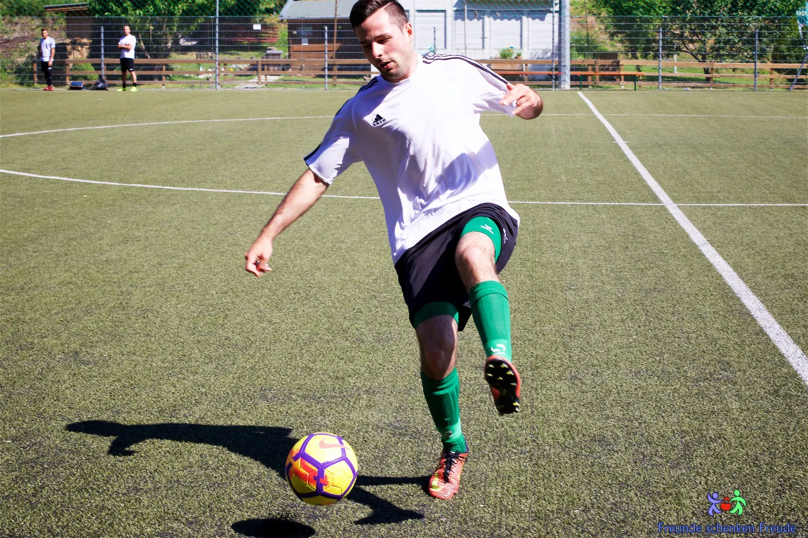
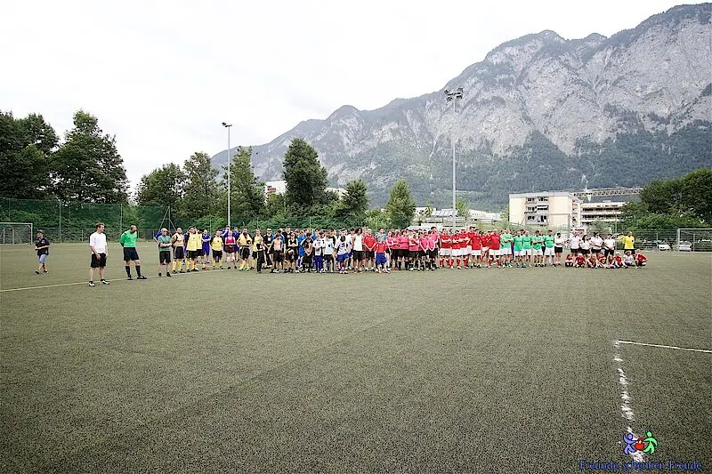
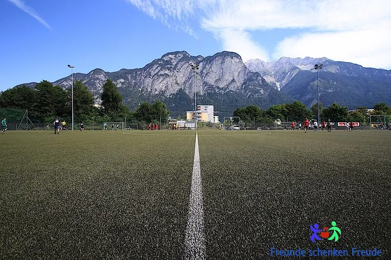
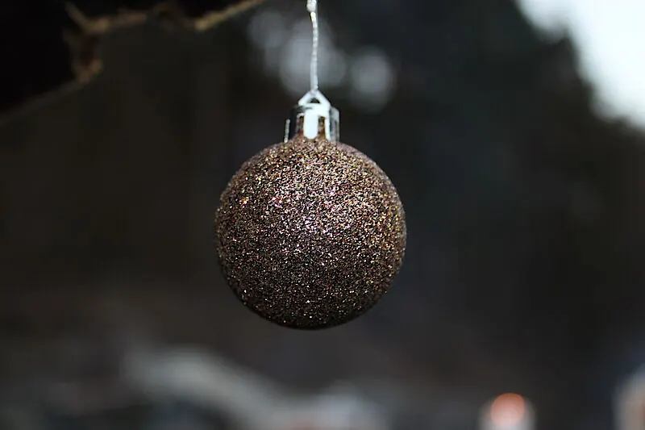
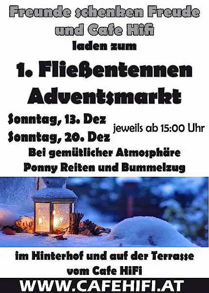

Aktuelles
Turniere, Adventmärkte und Neuigkeiten aus unserem Verein.
2023
1 Beitrag2022
1 Beitrag2019
1 Beitrag2018
1 Beitrag
2017
2 Beiträge
Turnier 2017: Neue Sieger trotz drei Hochzeiten
Trotz dreier Hochzeiten ein voller Erfolg: neue Turniersieger, Hüpfburg, Grillmannschaft und ein Abend an der Bar.
Weiterlesen
Save the Date: Unser Turnier am 8. Juli 2017
Am 8. Juli 2017 findet unser Turnier statt – Damen-, Herren- und gemischte Mannschaften sind herzlich willkommen.
Weiterlesen2016
2 Beiträge
Turnier 2016: Ein Tag voller Fußball, Spaß und Dankbarkeit
18 Mannschaften am ersten Ferientag, eine ergreifende Gedenkminute für Kurti und ein besonderer Dank an Didi und Maria.
Weiterlesen
Save the Date: Unser Turnier am 9. Juli 2016
Am 9. Juli 2016 findet unser Turnier statt – Damen-, Herren- und gemischte Mannschaften sind herzlich willkommen.
Weiterlesen2015
2 Beiträge
Christkindlmarkt Völs und Fließentennen-Adventmarkt 2015
Rückblick auf den Christkindlmarkt in Völs und unseren ersten Adventmarkt an der Fließentenne mit Glühwein, Kiachln und Ponyreiten.
Weiterlesen
Einladung zum 1. Fließentennen-Adventmarkt
Am 13. und 20. Dezember laden wir gemeinsam mit dem Cafe HIFI zu Glühwein, Kiachln und gebrannten Mandeln in den Hinterhof.
Weiterlesen